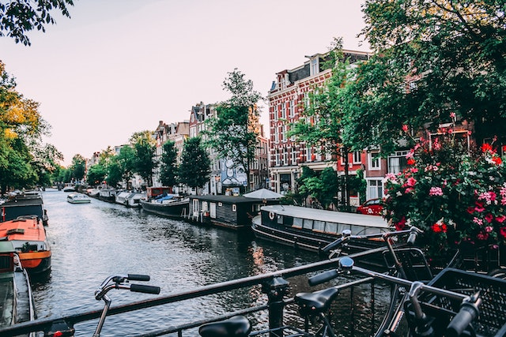

As paisagens de Amsterdã
Amsterdã é uma cidade rica em paisagens deslumbrantes que atraem turistas de todo o mundo. A cidade, que é famosa por seus canais sinuosos, oferece aos visitantes vistas incríveis do horizonte da cidade e das águas calmas dos canais.
Um dos pontos mais famosos de Amsterdã é o canal conhecido como Herengracht, que é cercado por casas antigas e elegantes, com fachadas ornamentadas e telhados íngremes. Este canal foi construído no século 17 e é um dos quatro principais canais da cidade, que são todos Patrimônios Mundiais da UNESCO.
Outro lugar que oferece vistas incríveis de Amsterdã é o Vondelpark, que é o maior parque da cidade. Este parque tem uma grande variedade de flora, fauna e paisagens naturais, incluindo lagos, florestas e jardins. O Vondelpark é um ótimo lugar para fazer piqueniques, andar de bicicleta ou simplesmente relaxar e apreciar a beleza natural da cidade.
A Praça Dam também é um ótimo lugar para ver a arquitetura impressionante de Amsterdã. Esta praça histórica é cercada por edifícios antigos, incluindo o Palácio Real de Amsterdã e o Monumento Nacional. A praça é frequentemente usada como local de eventos públicos, como concertos ao ar livre e celebrações nacionais.
Por fim, outro destaque de Amsterdã é a vista panorâmica do mirante do Adam Tower. Localizada no coração da cidade, a torre oferece uma das melhores vistas de toda Amsterdã. É possível ver o horizonte da cidade, os canais sinuosos e as paisagens naturais em todas as direções.
Em resumo, as paisagens de Amsterdã são incríveis e oferecem uma variedade de experiências únicas para os visitantes. Desde os canais sinuosos até os parques exuberantes, a cidade é um verdadeiro paraíso para os amantes da natureza e da arquitetura histórica.
Além disso, Amsterdã é uma cidade que valoriza muito o cuidado com o meio ambiente e a sustentabilidade. Isso pode ser visto nas várias áreas verdes da cidade, bem como na grande quantidade de ciclovias espalhadas por toda a cidade. A bicicleta é um meio de transporte extremamente popular em Amsterdã e, ao andar de bicicleta pela cidade, é possível apreciar as paisagens de uma forma ainda mais próxima e intimista.
Outro lugar que merece destaque é o Rijksmuseum, um dos museus mais famosos de Amsterdã, que oferece aos visitantes uma coleção impressionante de arte e história, incluindo obras-primas de artistas holandeses como Rembrandt e Vermeer. Além das exposições dentro do museu, o próprio edifício em si é uma obra-prima da arquitetura histórica e oferece vistas incríveis da cidade.
Por fim, não podemos deixar de mencionar os jardins flutuantes de Amsterdã. Esses jardins são criados em barcos ou plataformas flutuantes nos canais da cidade e oferecem uma experiência única para quem quer apreciar a beleza da natureza em pleno coração urbano. Os jardins flutuantes são repletos de plantas exóticas, flores coloridas e até mesmo árvores frutíferas.
Em resumo, as paisagens de Amsterdã oferecem uma mistura única de belezas naturais e arquitetônicas, além de um estilo de vida voltado para a sustentabilidade e a preservação do meio ambiente. Seja admirando as vistas dos canais, passeando de bicicleta ou explorando os museus e jardins da cidade, há sempre algo novo e surpreendente para descobrir em Amsterdã.